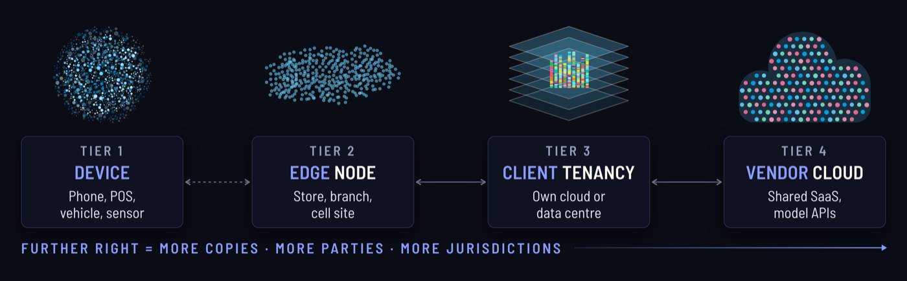

On 6 October I gave a talk for GTIA called Securing AI at the Edge. This is the written version, for anyone who missed it or would rather have the detail without the slides.
The talk is about one tension. AI wants more of our clients' data, and it wants it faster, while traditional data practice wants you to keep it all in one safe spot. More and more often, the AI doing the asking is not in a data centre at all. It is running on the phone in someone's pocket.
In today's society, every person is producing data, and not all of that data can be treated the same. So we need to classify it: some restricted, some confidential, some internal, some public. The question I wanted to answer was how we let AI work on that data without losing control of it.
Governance was built for data sitting still
AI wants more data, faster. Governance wants less, slower. The answer is not to slow AI down. It is to move the controls to where the data is.
Most governance was designed for data that sits in a warehouse and gets reviewed by people. Three things break that model.
- Speed: real-time decisions leave no time for a round trip to a central store and a human check.
- Scale: one model can run on thousands or millions of endpoints, and every one of them is a place data can leak.
- Access: models and agents need richer, rawer signals than dashboards ever did.
The edge is a spectrum, not a place
"The edge" gets used loosely, so it is worth pinning down. I think of it as four tiers.
- Device: the phone, point of sale, vehicle or sensor itself.
- Edge node: a store, a branch, a cell site.
- Client tenancy: the client's own cloud or data centre.
- Vendor cloud: shared SaaS and model APIs.

The further you move from the device, the more copies of the data exist, the more parties can touch it and the more jurisdictions it passes through. Most real systems span several tiers at once, so for every piece of data I want you to ask two questions. Where is the decision made? And where does the data rest?
Edge AI moves risk. It does not remove it.
So is the edge the answer? Partly. Running AI on the device gets you real benefits:
- raw data can stay on the device
- decisions do not need a round trip
- there is a smaller central honeypot to breach
- the data residency story gets much easier
In exchange, you take on new risk:
- attackers have physical access to the model
- the model and its prompts can be extracted from the app
- you have to keep updates and config intact across a whole fleet
- telemetry can turn into a data export without anyone deciding it should
Edge is better for privacy. It is not privacy by default, because the device belongs to someone else. The rest of the talk was four steps for dealing with that.
Step 1: classify by where data may travel
Most classification schemes rank data by sensitivity. That is useful, but it does not tell an engineer what they are allowed to do with a field. So start from every field in every source, and give each class a travel limit.
- Public: model weights you publish, docs, benchmarks. It can go anywhere.
- Internal: aggregated, thresholded outcomes and metrics. It can reach a vendor cloud, under contract.
- Confidential: linkable customer records, including hashed or tokenised IDs. It stays inside the client perimeter.
- Restricted: raw behaviour, location, content and special category data. It never leaves the device.
![Unclassified data, every field from every source, branches into four classes, each with the furthest it may go. Public (model weights you publish, docs, benchmarks): anywhere. Internal (aggregated, thresholded outcomes and metrics): vendor cloud, under contract. Confidential (linkable customer records, hashed or tokenised IDs): client perimeter only. Restricted (raw behaviour, location, content, special category): never leaves the device. An arrow from device up to anywhere shows less sensitive data travelling further.](../images/securing-ai-edge-classify.webp)
Read it from the bottom up and the rule is simple: the less sensitive the data, the further it can travel. Hashed and tokenised IDs sit in Confidential rather than Internal because they can still be linked back to a person. Each class also lines up with one of the four tiers, so every field has a boundary it must not cross.
Step 2: make consent and identity enforceable on the device
Consent as code, not a policy PDF. On the device that comes down to four controls.
- Start: collection begins only after consent, read live from the client's consent platform.
- Stop: withdrawal halts collection straight away, with no app release needed.
- Purge: deletion clears device state, caches and anything derived from them.
- Kill switch: a remote off for the whole fleet, plus staged rollouts to limit the damage.
Then identity. Link the device to the customer with a client-generated, rotatable ID that the client controls. Never use the device advertising ID.
Test the whole lifecycle, including the awkward cases: reinstall, new phone, account closure and deletion.
Step 3: decide where it lives and when it dies
Do this before you collect anything. On sovereignty, I ask four questions:
- Where is it processed, stored and backed up?
- Who can be compelled to hand it over?
- Can it run inside the client's own tenancy or region?
- Does the model provider see prompts or logs?
On retention:
- Set the lawful basis and retention period per attribute, not per system.
- Make deletion reach the device, caches, logs and vector stores.
- Know what a model has memorised from its training data.
- Keep evidence that deletion actually happened.
Retention is where AI makes the job harder. Deletion has more places to reach than it used to, because a record can live on in a cache, a log, an embedding in a vector store, or the model itself.
Step 4: the technical controls that matter most at the edge
The tags in brackets are from the OWASP Top 10 for LLM Applications (2025).
- Signed models and config (LLM03, LLM04): verify every model, dataset and config before it runs.
- Keys in hardware: use the secure enclave or keystore, encrypt at rest, and attest the device and app.
- Assume extraction (LLM07): keep secrets out of system prompts and binaries. Obfuscate, rate-limit and watermark.
- Treat input as hostile (LLM01, LLM05): prompt injection and unsafe output handling apply to local content too.
- Least agency (LLM06): limit what on-device agents can call or change.
- Minimal telemetry (LLM02): aggregate and threshold before anything is uploaded.
That last control connects back to Step 1. Aggregated, thresholded data is the Internal class, and it is the only customer-derived data allowed to reach a vendor cloud.
The regulatory clock
This is context, not legal advice, but these are the dates I would plan around.
- August 2025: EU AI Act obligations for general-purpose AI models apply.
- February 2026: the UK Data (Use and Access) Act's main data protection changes are in force, including the rules on automated decision-making and international transfers.
- August 2026: EU AI Act Article 50 transparency duties for AI-generated content.
- December 2027: Annex III high-risk systems, deferred by the AI Omnibus.
- August 2028: Annex I high-risk AI in regulated products.

Deferred, not cancelled. GDPR and UK GDPR already apply to every edge deployment today, so use the extra high-risk time to build the evidence rather than to wait. I went through the EU and UK positions in more detail in Three Regulators Disagree on AI Agents.
What running AI on edge devices has taught me
The technology is rarely the hard part. The client's review process is. A few patterns from real deployments:
- The decision stays on the device. The cloud publishes rules and receives aggregates. The decision itself never leaves the phone.
- Security review is the long pole. Client privacy review, security review and app release cycles take far longer than the integration.
- Host where the client needs it. Region-locked hosting, or running inside the client's own tenancy, removes most sovereignty objections.
- Certify the whole stack. Have evidence packs ready before the first security questionnaire arrives, covering ISO 27001, ISO 27018 and SOC 2.
Five questions before your next edge AI deployment
If you take one thing from this, take these questions to your next edge AI project.
- What is the furthest each data class is allowed to travel?
- Can we stop and purge collection for one person, remotely, today?
- Who controls the identifier that links a device to a customer?
- If the model and prompt were extracted tomorrow, what would leak?
- What leaves the device, and could we defend it to a regulator?
Answer them with evidence, not intent. For question two, that means a purge you have actually run and the deletion record it left behind.
Thank you to GTIA for having me. Feel free to reach out if you'd like to know more or have any questions.